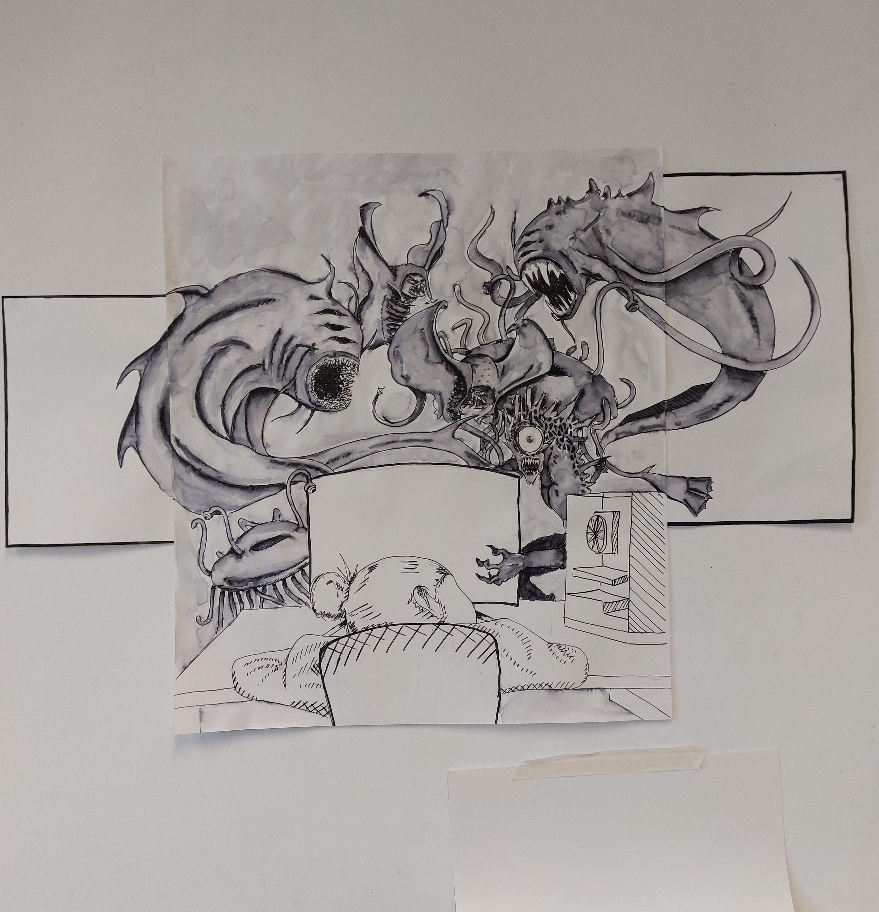

About Sveva...

Hi I'm Sveva and I am a student currently studying at ESSEC. This is my profile I created while going through a course with Le Wagon on how to programme. I really enjoyed this course because I got to see my coding turn into a website. The subjects I'm genuinely passionate about and will talk about in this profile are art, cars and video games.
Discover Le WagonART and DESIGN
Art ande design have been a passion f mine since I was young. Over the years I have become a lot more creative and better at the subject. Above is one of my paintings I did during my time doing A Level ART in high school. I used many techniques such as ink and brush, spreading ink with water and also fine-liner. Some of my favorite artists and designers of all time are Goia, Dali and Iris Van Herpen.
CARS
Cars are a new interest of mine. I started appreciating sports cars, and being interested in how they are built. Now I have moved onto being interested more into older cars and JDM's (Japanese Design Manufacture). I have also joined an assocation about cars in ESSEC called GTE (Gran Turismo ESSEC). I am part of the events pole in this assocation. Below is the assocations Instagram!
VIDEO GAMES
I've always been very into video games. I started with playing wii games such as Super Mario Bros. Then I played newer games such as RDR2 and COD:infinite warfare. When I was around 15 I bought all the parts to a PC and built one myself which I'm currently still using today and using to code this profile. I play nowadays online FPS's and story games. One of my favorite story games is Horizon Zero Dawn it has the most amazing design behind it and I won't ever be unimpressed by it. Below is my account for the clips I take while playing!